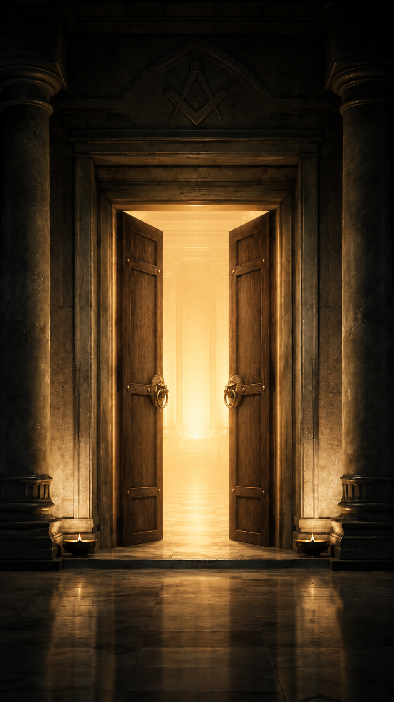
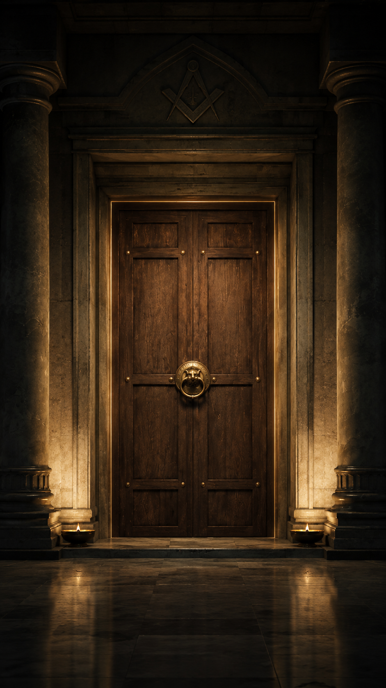

Libertad
El pensamiento libre es la primera piedra del hombre que trabaja en sí mismo.
Click · tecla · toque para continuar


— El Templo —
Bienvenido al espacio donde los hombres
trabajan en su propia perfección.
El pensamiento libre es la primera piedra del hombre que trabaja en sí mismo.
Ante la verdad, todos los hombres son iguales sin distinción de origen ni nombre.
El trabajo compartido une lo que la diferencia separa y edifica lo perdurable.
La Masonería no es una religión ni un partido. Es un método. Una forma de hacer del hombre un mejor hombre: a través del trabajo sobre sí mismo, la búsqueda de la verdad y el servicio al prójimo. Nació de los constructores de catedrales y sobrevivió porque sus preguntas siguen siendo las mismas que las tuyas.
Fundada en el Oriente de Barquisimeto bajo los auspicios de la Gran Logia de Venezuela, la Logia Teófilo Leal N° 115 ha trabajado por décadas al servicio de sus hermanos y su comunidad.
Desde su constitución, ha sido espacio de reflexión, fraternidad y trabajo interior para hombres de diversas profesiones y orígenes, unidos por un propósito común: la búsqueda del mejoramiento personal.
El número 115 no es solo una cifra: es una herencia viva que cada miembro porta y honra con su conducta y su trabajo diario.
Teófilo Leal fue un venezolano cuya vida encarnó los principios que esta Logia lleva en su nombre. Hombre de pensamiento claro y acción consecuente, dejó una huella que sus hermanos decidieron perpetuar.
Este espacio está consagrado a su memoria y a los valores que él representó. Datos biográficos a incorporar con autorización de la Logia.
La verdad es el norte del hombre que no se conforma.
El trabajo sobre uno mismo es la obra que nunca termina.
Lo que nos une es más fuerte que lo que nos separa.
Quien tolera la diferencia aprende la lección más difícil.
La perfección no es un destino, es la dirección del viaje.
Servir al prójimo es la más alta expresión de la libertad.
Si algo de lo que has recorrido hoy resuena en ti,
ya sabes dónde está la puerta.